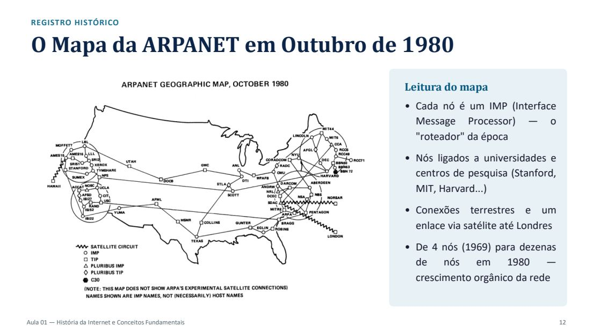
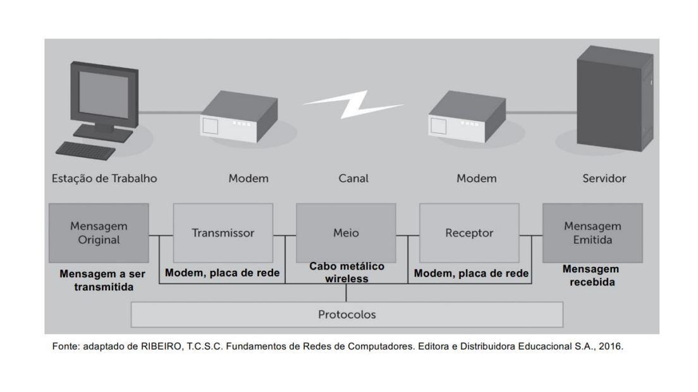
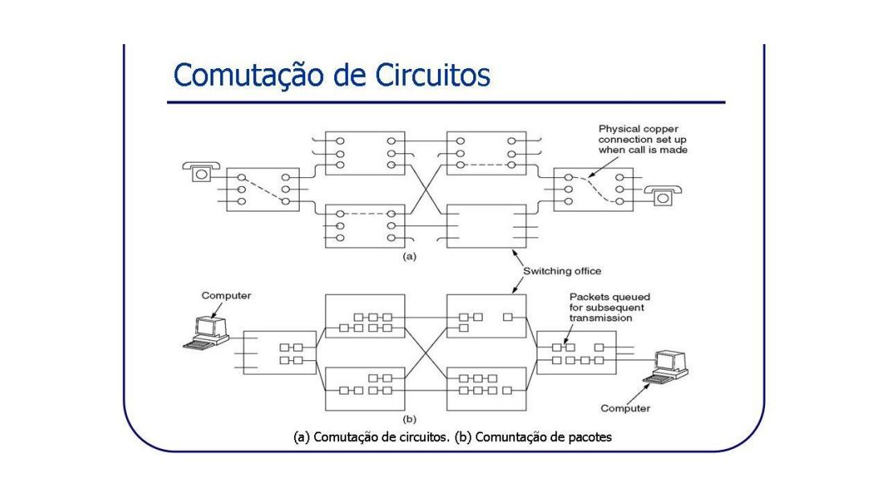

Da necessidade de conectar computadores às regras e aos caminhos que tornam a comunicação possível.
Engenharia Elétrica · UFMA
Leitura estimada: 28 min
5 questões de revisão
Conceito
Ao final desta aula, você poderá…
Definir rede de computadores e distinguir Internet de Web.
Identificar os elementos da comunicação e o papel dos protocolos.
Comparar comutação de circuitos, mensagens e pacotes.
Distinguir capacidade nominal e throughput nos exemplos da aula.
Resumo
Nesta aula
Redes e comunicação
Como bilhões de dispositivos compartilham informação e serviços?
Conceito
O que é uma rede?
Dois ou mais dispositivos interconectados por uma infraestrutura de comunicação para compartilhar dados, recursos e serviços. A definição é apresentada no material com referência a Tanenbaum.
Dados:
informações trocadas.
Recursos:
memória, armazenamento e impressoras.
Serviços:
DNS, e-mail, Web e webconferência.
Analogia
Uma rede de estradas
As estradas representam os meios de transmissão; as cidades, os dispositivos; as mercadorias, os dados. A infraestrutura permite que a informação circule entre pontos distintos.
Analogia
O caminho de uma encomenda
Empacotar:
organizar os dados em pacotes.
Endereçar:
identificar origem e destino.
Encaminhar:
decidir o caminho.
Entregar:
receber; no exemplo com TCP, confirmar o recebimento.
Conceito
Os cinco elementos
A mensagem é a informação. O protocolo rege a comunicação; não é uma etapa física posterior ao receptor.
Identifique mensagem, transmissor, meio, receptor e protocolo em uma chamada de vídeo. O meio pode ser metálico, óptico ou de rádio.
Conceito
Protocolo: regras comuns
Um protocolo define formato e significado das mensagens trocadas entre entidades pares. Para interpretar a comunicação, os participantes precisam seguir as mesmas regras na camada considerada.
A comunicação entre pares é lógica: os dados efetivamente descem e sobem a pilha de camadas.
Conceito
Modelo e pilha de protocolos
Modelo de referência:
organiza conceitualmente as funções da comunicação.
Pilha de protocolos:
reúne os protocolos concretos que implementam essas funções. No material, TCP está em Transporte e IP em Rede.
Resumo
O que a rede precisa fazer
Gerar sinais e sincronizar transmissão e recepção.
Formatar mensagens e tratar erros.
Controlar o fluxo e proteger a confidencialidade.
Endereçar, rotear, monitorar e administrar.
Da ARPANET à Internet
Marcos apresentados na aula; a cronologia foi preservada para revisão.
Conceito
Por que interligar computadores?
O material relaciona a origem da rede à necessidade de comunicação resiliente: a telefonia pública possuía centrais cuja falha poderia fragmentar a comunicação. Apresenta iniciativas da ARPA em 1967–1968 e a rede experimental de quatro nós em dezembro de 1969.
Exemplo
Um registro de crescimento
O mapa da ARPANET de outubro de 1980 mostra IMPs, universidades e centros de pesquisa, conexões terrestres e um enlace via satélite até Londres. O mapa original pode ser consultado na galeria.
Atenção
Internet não é Web
A Internet é a infraestrutura que interconecta redes. A Web é um dos serviços que utiliza essa infraestrutura. O material atribui a criação da Web a Tim Berners-Lee, em 1989, no CERN.
Resumo
Linha do tempo do material
1969
Rede experimental com UCLA, UCSB, SRI e Universidade de Utah.
1975
O material situa o desenvolvimento do TCP/IP pela DARPA.
1983
Em 1º de janeiro, adoção do TCP/IP na ARPANET.
1985
O material situa a construção da NSFNET.
1989
O material situa a criação do IAB e cita IRTF e IETF.
1990s
Expansão comercial da Internet e surgimento da Web.
Curiosidade
Pioneiros
Vint Cerf e Bob Kahn:
coautores do TCP/IP.
Tim Berners-Lee:
criador da World Wide Web.
Atenção
Nota para revisão do professor
A linha do tempo registra TCP/IP em 1975, enquanto o card de pioneiros menciona coautoria em 1974. Os marcos podem se referir a etapas diferentes, mas o PDF não explica essa distinção. Mantêm-se os registros do material, sem ajuste de datas.
Como compartilhar os caminhos da rede
Compare o que é reservado e qual unidade é encaminhada.
Conceito
Circuitos
Um canal é reservado durante a comunicação. O processo possui três fases: estabelecimento, transferência e desconexão. O exemplo é a telefonia analógica.
Analogia: reservar uma linha exclusiva, mesmo durante os momentos de silêncio.
Conceito
Mensagens
A mensagem inteira recebe um endereço de destino e é encaminhada nó a nó. Cada nó recebe e armazena todo o conteúdo antes de repassá-lo. Não há reserva prévia do meio.
O armazenamento e a espera por disponibilidade introduzem atrasos.
Conceito
Pacotes
A mensagem é dividida em blocos menores. O material destaca compartilhamento de recursos e a possibilidade de percursos distintos. Em cada roteador, o pacote é processado, enfileirado e transmitido.
Na prática
Compare os percursos
Esquema qualitativo: as distâncias e os tempos não estão em escala. A animação é opcional.
Circuitos: primeiro o caminho é reservado; depois os dados percorrem o canal exclusivo; ao final, a conexão é desfeita.
Exemplo
Circuito virtual × datagrama
Aspecto
Circuito virtual
Datagrama
Caminho
Caminho lógico estabelecido
Encaminhamento independente
Percurso
Pacotes da comunicação seguem o caminho lógico
Pacotes podem percorrer rotas distintas
Exemplos do PDF
ATM e Frame Relay
Internet / TCP/IP
Resumo
Circuitos × pacotes
Critério
Circuitos
Pacotes
Recursos
Reservados durante a chamada
Compartilhados dinamicamente
Banda ociosa
Pode ficar reservada sem uso
Uso compartilhado da capacidade
Atraso
Mais previsível no exemplo de telefonia
Pode variar: jitter
Falhas
Falha no trecho interrompe a chamada
Podem existir rotas alternativas
Multiplexação citada
FDM / TDM
Estatística, por filas
Atenção
Nota para revisão do professor
O PDF cita X.25 como comutação de mensagens e atribui confirmação de recebimento à comutação de circuitos. Também generaliza sequência, remontagem e retransmissão na descrição de datagramas. Esses enunciados dependem da tecnologia ou do protocolo e ficam assinalados para revisão; não serão usados como respostas certas no questionário.
Da capacidade ao desempenho observado
O caminho dos dados conecta a casa, a organização e os provedores.
Conceito
Capacidade nominal
A Aula 01 chama de “largura de banda” a capacidade máxima nominal, em bits por segundo, com exemplos Ethernet de 10, 100 e 1000 Mbps.
Conceito
Throughput
É o desempenho observado na prática. O material lista fatores que podem reduzi-lo: quantidade de dispositivos, topologia, usuários simultâneos, falhas e retransmissões.
Na prática
Uma rede de redes
Rede doméstica: roteador Wi-Fi e dispositivos.
Rede corporativa: estações, switches e servidores.
ISP local/regional: agrega tráfego de casas e empresas.
Na Aula 02, “largura de banda” é definida como faixa de frequências, em Hz. A Aula 01 usa o termo para capacidade nominal, em bits/s. A mudança de sentido está explicitada para evitar que o leitor compare diretamente essas unidades.
Resumo da aula
Retome as ideias centrais antes de responder.
Resumo
O essencial
Redes compartilham dados, recursos e serviços.
Internet e Web são conceitos distintos.
Protocolos estabelecem regras de comunicação.
Circuitos reservam recursos; mensagens são encaminhadas inteiras; pacotes dividem a mensagem.
Throughput descreve o desempenho observado.
Verifique seu entendimento
Questões adaptadas do material. Escolha uma resposta e confira a explicação.
Responda no seu ritmo. As respostas não são enviadas.
Pratique com o material original
Enunciados e gabaritos preservados. As quebras de linha foram adaptadas ao formato de leitura.
Exercício
Exercícios e respostas
Parte A — 7 questões conceituais
EXERCÍCIOS — PARTE A (CONCEITUAIS)
Fixação do Conteúdo da Aula 1
• 1. Diferencie rede de computadores e Internet. Dê um exemplo de cada.
• 2. Explique por que o Departamento de Defesa dos EUA considerava a rede telefônica pública
vulnerável.
• 3. Cite os quatro nós que compuseram a rede experimental de 1969 e explique sua importância
histórica.
• 4. Descreva os cinco elementos de um sistema de comunicação, dando um exemplo prático de cada
um.
• 5. Compare comutação de circuitos, de mensagens e de pacotes, indicando um exemplo de aplicação
para cada.
• 6. Por que a Internet utiliza comutação de pacotes por datagrama, e não por circuito virtual?
• 7. Explique a diferença entre largura de banda e throughput, citando fatores que afetam o segundo.
Material original · páginas 31 do PDF.
Gabarito comentado — Parte A
GABARITO COMENTADO
Respostas Esperadas — Parte A
1 Rede: infraestrutura que interconecta dispositivos. Internet: a maior rede de redes do mundo, baseada em TCP/IP. Ex.: rede local de uma
empresa vs. a Internet global.
2 Porque a comutação de circuitos das centrais telefônicas criava pontos únicos de falha: a queda de poucas centrais interurbanas fragmentaria
toda a comunicação.
3 UCLA, UCSB, SRI e Universidade de Utah (dez/1969) — marco inicial da ARPANET, embrião da Internet.
4 Mensagem (dado a transmitir), transmissor (envia), meio (caminho físico), receptor (recebe), protocolo (regras que padronizama comunicação).
5 Circuitos: canal dedicado (telefonia). Mensagens: dado inteiro nó a nó (X.25). Pacotes: dado fragmentado, roteado independentemente
(Internet).
6 Por oferecer melhor aproveitamento da largura de banda, tolerância a falhas e escalabilidade — cada pacote pode seguir rotas alternativas.
7 Largura de banda é a capacidade nominal do meio; throughput é o desempenho real, reduzido por número de dispositivos, topologia, usuários
e falhas.
Material original · páginas 32 do PDF.
Figuras do material
Registros e exemplos visuais preservados para consulta, com os rótulos do original.
Exemplo
Galeria de apoio
Abrir 3 figuras comentadas

Mapa da ARPANET em outubro de 1980 e orientações de leitura. · página 12 do PDF original.

Estação, transmissor, canal, receptor e servidor sob regras de protocolo; fonte indicada: Ribeiro, 2016. · página 16 do PDF original.

Comparação original entre comutação de circuitos e de pacotes. · página 21 do PDF original.
Para saber mais
Somente referências presentes nos arquivos fornecidos.
Resumo
Referências do material
Tanenbaum, A. S.
Redes de Computadores.
5ª ed. Pearson, 2011 — Cap. 1.
Kurose, J. F.; Ross, K. W.
Redes de Computadores e a Internet.
6ª ed. Pearson, 2013 — Cap. 1.
Ribeiro, T. C. S. C.
Fundamentos de Redes de Computadores.
Ed. Educacional S.A., 2016.
O PDF declara não haver RFC específica para esta aula introdutória.